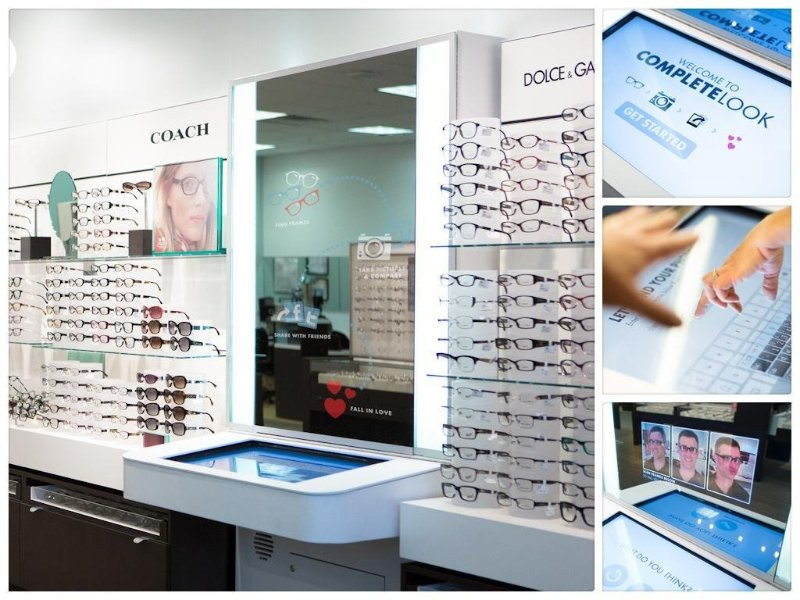

LensCrafters wanted a better way for customers to try on frames for glasses. They believed that they should be able to see themselves from all angles when they try a product on in the store. Through many phases of research and development, we built an experience that allows folks to try on as many frames of glasses as they like, take photos, and share those photos with friends and family to get feedback on which pair of frames they all like best.
Technology:
- Adobe AIR/AS3
- C++ (native extension)
- IP Cameras
- Vertical Mirror Screen/Horizontal Touch Screen
My roles:
- Application Developer/Technologist
- Hardware design
- Live testing
- On-site installation